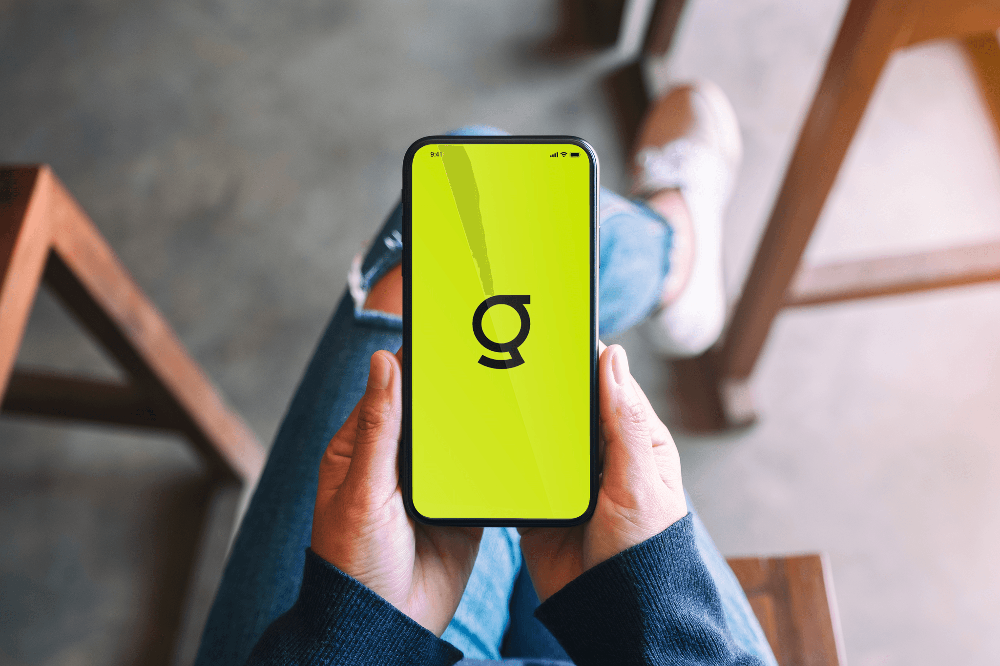
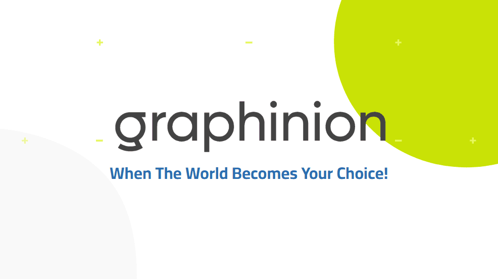
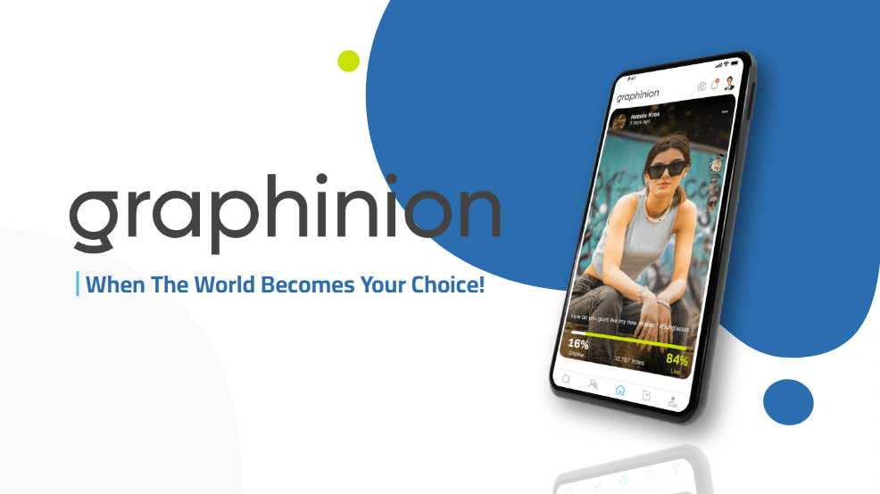
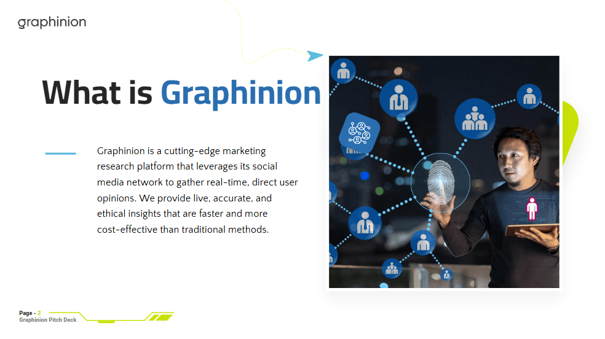
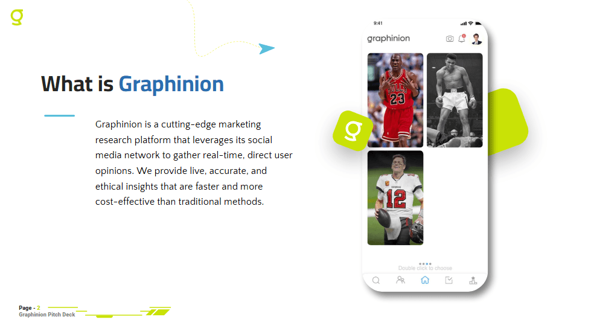
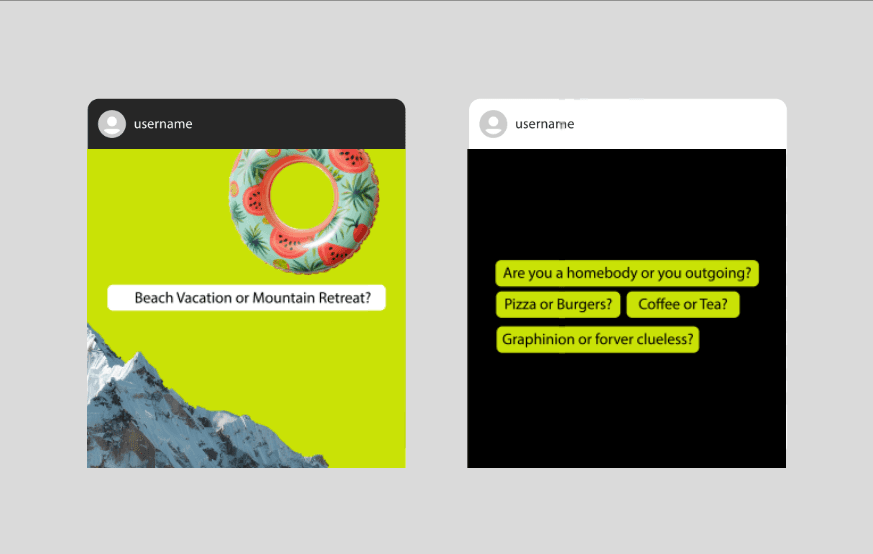
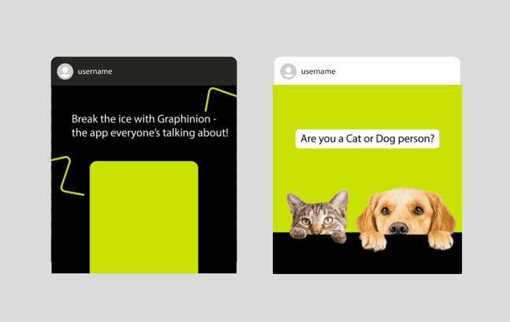
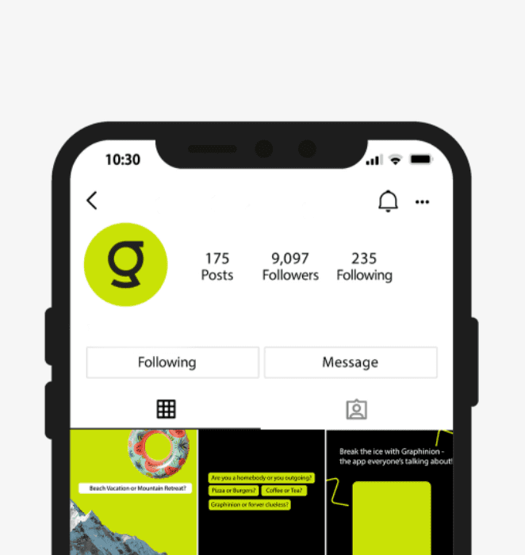

Graphinion
Freelance Designer, Marketing

- Role
- Graphic Designer
- Tools
- Adobe Photoshop, Illustrator
Overview
Graphinion is a startup social media app built around interactive “Would You Rather?”-style questions. I designed branded graphics for educational, awareness, events, and conversation posts to build community and engagement. Working with the marketing team, I ensured every asset matched the app’s playful yet polished identity, optimized for Instagram and other digital platforms
Goals
- Increase event visibility and attendance
- Create a reusable, on-brand social system (story/feed/reel)
- Improve engagement (views, saves, shares) and posting speed
Challenge
- No established visual identity for social posts
- Needed consistent, engaging content
- Limited existing brand assets
Solution
- Designed a branded social template system for conversation posts
- Created graphics optimized for social media feed and stories
- Maintained a cohesive look across all content
Pitch Deck
I redesigned the pitch deck to elevate Graphinion’s brand presence, creating a polished and trustworthy presentation that resonated with investors and instilled confidence within the team.




Social media
Social media engagement posts designed to capture attention, encourage interaction, and build interest in the application.



Email campaigns
My email campaigns highlighted bold, branded designs that drew over 4,000 visitors to the site in just 90 days. Including site attraction from 10% to 40% email open rate.